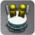

17 |
Instalaciones para el Juego en equipo |
 |
|
Puedes comenzar el Juego en equipo (Co-op Play) usando la instalación Multijugador (Multiplayer) de la Terminal o seleccionando Multijugador en el Menú de pausa (Pause Menu) (ver “Menú de pausa" en la página 15). La configuración del Juego en equipo es la misma en ambos casos.
Multijugador (Multiplayer)  Pueden jugar hasta 4 jugadores en el Juego en equipo (Co-op Play). Sin embargo, debes tener al menos un Pokémon y un control para cada jugador. Necesitarás haber añadido suficientes Pokémon en las Fases (Stages) o que uno de los jugadores tenga Pokémon guardados en el Wii Remote.
・ Comenzar el Juego en equipo (Co-op Play)
Sigue los pasos siguientes para configurar el Juego en equipo:
Acércate a la instalación Multijugador (Multiplayer), oprime
Sincroniza un Wii Remote con la consola Wii, conecta un Classic Controller a un Wii Remote ya sincronizado, o bien conecta un control de Nintendo GameCube a la consola Wii. A continuación podrás comprobar el número de controles conectados.
Para cada jugador aparece un Menú de cambios (Switch Menu). Seleccionen los Pokémon que quieren controlar. Tengan en cuenta que dos jugadores no pueden elegir el mismo Pokémon.
Una vez que todos los jugadores hayan seleccionado un Pokémon, aparecerá un mensaje de confirmación. Los jugadores deben oprimir
Una vez configurado el Juego en equipo (Co-op Play), los Pokémon de todos los jugadores aparecerán en la Terminal. Cada Pokémon lleva el número y el color del jugador que lo controla.
Si quieres salir del Juego en equipo para jugar solo, o si uno de los jugadores quiere abandonar el juego, el resto de los jugadores deben elegir de nuevo su Pokémon en la pantalla Multijugador (Multiplayer). El jugador que desea abandonar el juego debe seleccionar Cancelar (Cancel) en el Menú de cambios (Switch Menu) de la pantalla Multijugador (Multiplayer) (ver “Controles en la página 6). El Menú de cambios desaparecerá. El resto de los jugadores que van a continuar el juego deben seleccionar su Pokémon de nuevo. Cuando uno de los jugadores oprima
Wii Remote Pokémon
Sin embargo, no se pueden guardar o sacar Pokémon cuya Fuerza (Power) esté limitada por la Llave asombrosa (Wonder Key). En un Wii Remote se pueden guardar hasta 12 Pokémon. Nota: Si hay otros datos guardados en el Wii Remote, se sobrescribirán (a excepción de los personajes Mii™). Nota: Solo puedes guardar o sacar Pokémon de Pokémon Rumble. Nota: Ten en cuenta que los Pokémon que envíes al Wii Remote dejarán de estar en la consola Wii y viceversa.
Cuando quieras enviar un Pokémon de la consola Wii al Wii Remote Pokémon, selecciona Sí (Yes) en la instalación Wii Remote Pokémon. Selecciona un Pokémon oprimiendo Cuando quieras enviar un Pokémon del Wii Remote Pokémon a la consola Wii, selecciona un Pokémon del Wii Remote Pokémon (con la marca |

 y selecciona Sí (Yes), o elige Multijugador en el Menú de pausa (Pause Menu).
y selecciona Sí (Yes), o elige Multijugador en el Menú de pausa (Pause Menu).  en el Classic Controller o
en el Classic Controller o  en el control de Nintendo GameCube.
en el control de Nintendo GameCube.
 (o
(o  ) para confirmar los ajustes del Juego en equipo (Co-op Play).
) para confirmar los ajustes del Juego en equipo (Co-op Play).


 para confirmar y el Pokémon se enviará al Wii Remote Pokémon.
para confirmar y el Pokémon se enviará al Wii Remote Pokémon. |
 |
 |